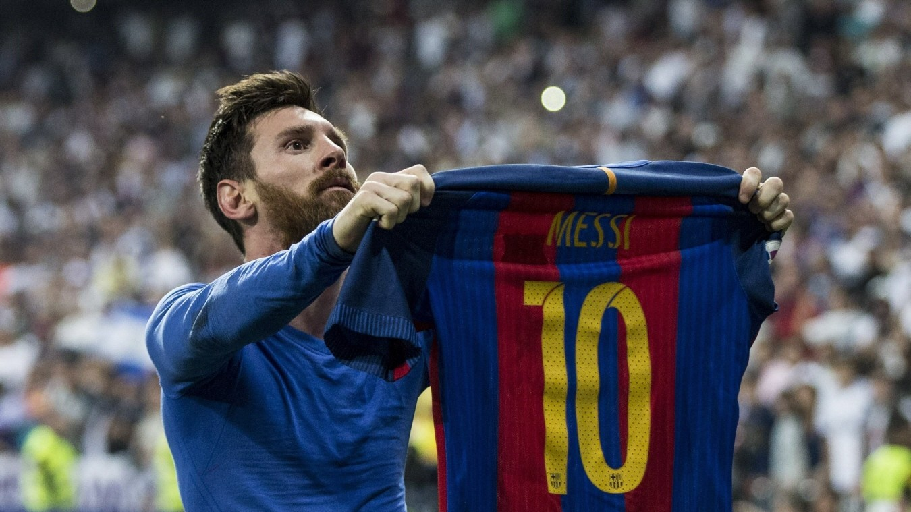

Lionel Messi (L10)
Lionel Andrés Messi (geboren am 24. Juni 1987), auch bekannt als Leo Messi, ist ein argentinischer Profifußballer, der als Stürmer für den Ligue-1-Verein Paris Saint-Germain spielt und Kapitän der argentinischen Nationalmannschaft ist. Messi wird oft als der beste Spieler der Welt angesehen und gilt als einer der größten Spieler aller Zeiten. Er hat sieben Mal den Ballon d'Or und sechs Mal den Goldenen Schuh Europas gewonnen und wurde 2020 in das Ballon d'Or Dream Team gewählt. Bis zu seinem Abschied im Jahr 2021 verbrachte er seine gesamte Profikarriere beim FC Barcelona, wo er eine Rekordzahl von 35 Trophäen gewann, darunter zehn Titel in La Liga, sieben in der Copa del Rey und vier in der UEFA Champions League. Als erfolgreicher Torjäger und kreativer Spielmacher hält Messi die Rekorde für die meisten Tore in La Liga (474), einer La-Liga- und Europa-League-Saison (50), die meisten Hattricks in La Liga (36) und der UEFA Champions League (8) sowie die meisten Assists in La Liga (192), einer La-Liga-Saison (21) und der Copa América (17). Er hält auch den Rekord für die meisten Länderspiel Tore eines Südamerikaners (81). Messi hat in seiner Karriere über 750 Tore für seinen Verein und sein Land erzielt und ist der Spieler mit den meisten Toren für einen einzigen Verein.
Geboren und aufgewachsen in Zentralargentinien, zog Messi im Alter von 13 Jahren nach Spanien und schloss sich dem FC Barcelona an, für den er im Oktober 2004 im Alter von 17 Jahren sein Debüt im Wettbewerb gab. Innerhalb der nächsten drei Jahre etablierte er sich als fester Bestandteil des Vereins. In seiner ersten ununterbrochenen Saison 2008/09 verhalf er Barcelona zum ersten Triple im spanischen Fußball; im selben Jahr gewann Messi im Alter von 22 Jahren seinen ersten Ballon d'Or. Es folgten drei erfolgreiche Spielzeiten, in denen Messi vier Mal in Folge den Ballon d'Or gewann, womit er der erste Spieler war, der die Auszeichnung vier Mal in Folge erhielt. In der Saison 2011/12 stellte er den La-Liga- und den Europarekord für die meisten Tore in einer Saison auf und etablierte sich gleichzeitig als Barcelonas Torschützenkönig aller Zeiten. In den folgenden beiden Spielzeiten wurde Messi bei der Wahl zum Ballon d'Or hinter Cristiano Ronaldo (seinem vermeintlichen Rivalen) Zweiter, bevor er in der Saison 2014/15 zu seiner Bestform zurückfand, Torschützenkönig in La Liga wurde und Barcelona zu einem historischen zweiten Triple führte, nach dem er 2015 mit dem fünften Ballon d'Or ausgezeichnet wurde. Messi übernahm 2018 das Kapitänsamt des FC Barcelona und gewann 2019 den sechsten Ballon d'Or in Folge. Da sein Vertrag ausläuft, unterschrieb er im August 2021 bei Paris Saint-Germain.
Bei Paris Saint-Germain, war er in der Saison 2021/22 erneut erfolgreich. Er wurde französischer Meister und schoss durch die Saison 6 Tore und machte 14 Assists.